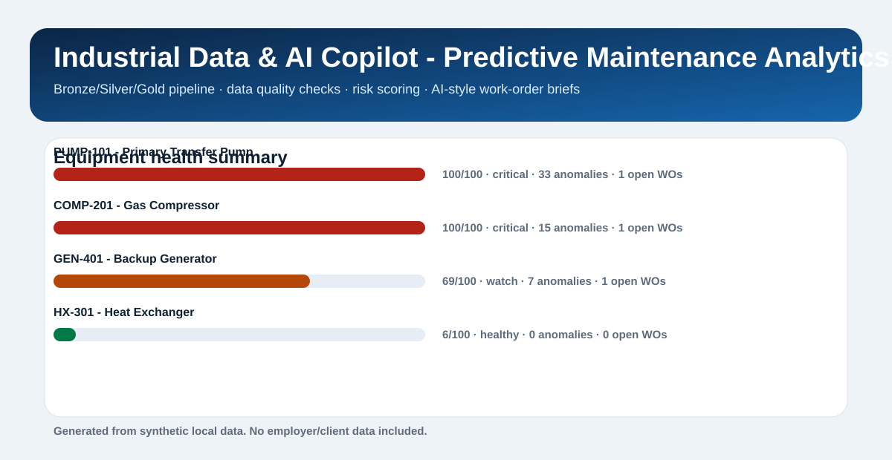

Projects centered on usable reporting, workflow acceleration, and cleaner decision-making.
Each project shows the problem, the data flow, the output, and the business angle.
It is the strongest summary of how I combine data engineering, quality checks, and AI-assisted delivery.
Why Me
Technical depth is only half the story.
Data engineering that stays close to the business
I like building pipelines, quality layers, semantic models, and dashboards that are actually usable by operations, maintenance, and business teams.
Industrial context without the learning curve
My background helps me work comfortably with sensor data, field workflows, spreadsheet-heavy processes, and ambiguous operational inputs.
AI as workflow acceleration, not decoration
I use AI to structure documents, speed up engineering work, and reduce manual friction in real processes, with validation steps that keep outputs reliable.
Selected Work
Projects that reflect the direction I want to grow.
Featured Case Study
Industrial Data & AI Copilot
A recruiter-friendly industrial analytics case that simulates how I approach messy operational data: ingest raw files, validate them, model Bronze/Silver/Gold layers, score equipment risk, and produce concise maintenance briefs.
- Built a local warehouse with Python, SQL, SQLite, and medallion-style modeling
- Added data quality checks for duplicates, missing values, invalid statuses, and impossible readings
- Generated analytics outputs and AI-style work-order summaries for non-technical users
Bronze / Silver / Gold
Risk scoring
Dashboard + briefs

Fabric Ops Analytics Platform
A Microsoft Fabric style operations scorecard built on Bronze, Silver, and Gold layers to track backlog pressure, SLA exposure, downtime, technician load, and cost visibility.
Python · SQL · lakehouse thinking · KPI modeling
Fabric-aligned
Executive dashboard
Quality layer
Document AI Ops Intake
A structured intake workflow for operational documents that extracts key fields, validates the results, separates exceptions, and delivers spreadsheet-ready outputs for downstream reporting and action.
Python · document processing · validation rules · workflow automation
Spreadsheet-ready
Exception queue
Routing hints
Experience Signal
The pattern across my work is consistent.
Data Engineering, analytics architecture, and AI automation
Building practical solutions with Microsoft Fabric, OneLake, SQL, PySpark, Power BI, and document-heavy workflow automation.
Industrial operations and data-intensive environments
Exposure to safety-critical workflows, operational data, time-series signals, maintenance contexts, and business decisions that depend on reliable information.
Mechanical Engineering at UFRJ
A strong engineering base that shaped how I reason about systems, constraints, diagnostics, and practical implementation.
Stack
Tools I reach for most often.
Python
SQL
PySpark
Spark SQL
Microsoft Fabric
OneLake
Power BI
Lakehouse
Medallion Architecture
ETL / ELT
LLM Workflows
Document Processing
Power Query
DAX
Operational Analytics
Contact
Open to remote Data Engineer, Analytics Engineer, and AI Automation roles.
If you are hiring for data pipelines, analytics engineering, operational BI, or AI-assisted internal tools, this portfolio is the clearest reflection of the kind of work I want to keep doing.
Best way to use this portfolio: share the homepage in applications and LinkedIn, then point hiring teams to the flagship case first.